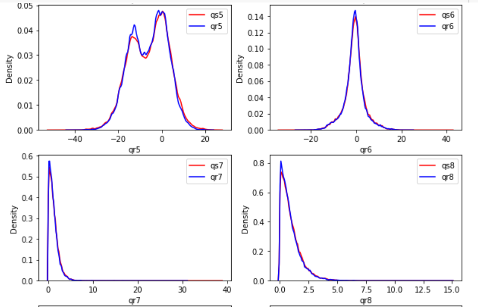
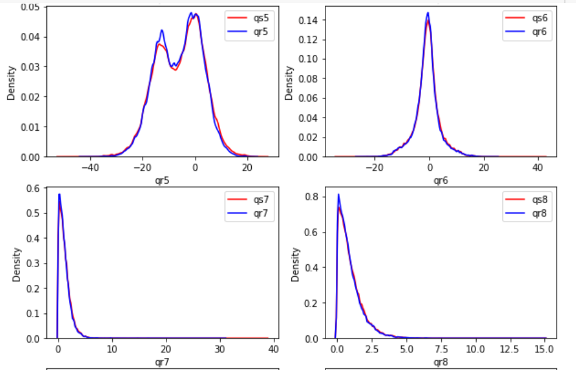
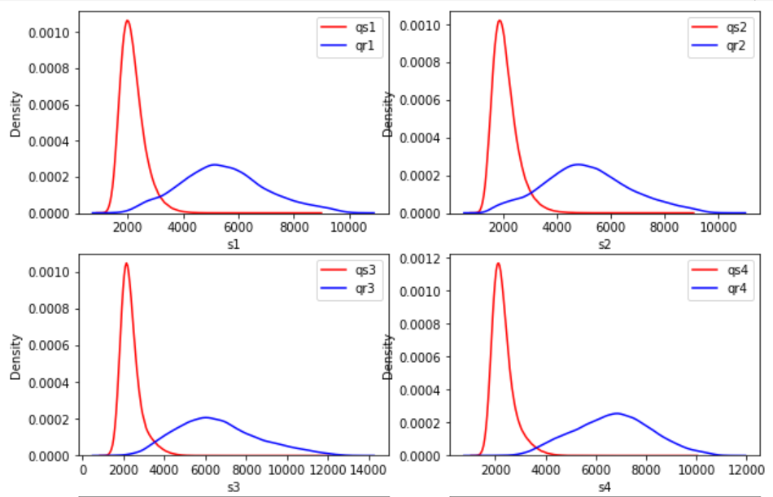
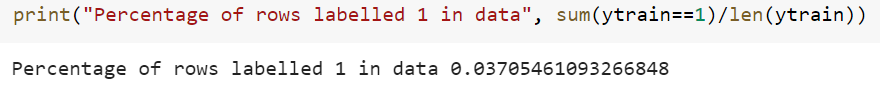

Large Scale Machine Learning Challenge-
Fusion of Algorithms for Facial Recognition.
From March to April 2020, in a team of 2, I competed in the Data Science challenge of the Machine Learning course at Telecom Paris, in which we ranked 8th out of 126 participants.
Problem Definition
The increasingly ubiquitous presence of biometric solutions and face recognition in particular in everyday life requires their adaptation for practical scenario. In the presence of several possible solutions, and if global decisions are to be made, each such single solution can be far less efficient than tailoring them to the complexity of an image. In this challenge, the goal was to build a fusion of ML algorithms in order to construct the best suited solution for comparison of a pair of images. This fusion was driven by qualities computed on each image. Comparing of two images is usually done in two steps.
- First, a vector of features is computed for each image
- Second, a simple function produces a vector of scores for a pair of images.
Thus, the goal of the challenge was to create a binary classification function comparing a pair of images based on the datasets and features mentioned below, and decide whether two images represent the same person.
Exploratory analysis
For this challenge, we were provided with a label set of training data, containing 1,068,504 training observations of pair of images, and a test set without labels, containing 3,318,296 test observations. Both of the datasets were csv files.
Training data set
The training set contained one observation per row, describing the 37 following features below, based on a pair of images. No data pre-processing was needed for this project.
- Columns 1 - 13 : 13 qualities assessed on the first image.
- Columns 14 - 26 : 13 qualities assessed on the second image.
- Columns 27 - 37 : 11 matching scores between the two images.
- Column 38 : Labelled pair of images : 1 if a pair of images belong to the same person, 0 otherwise.
Data Distribution
To better understand the data, let's have a look at how it is distributed. To do so, we concatenate the training set and the test set, and compare the distribution of each of the 13 features between first image and second image.
 

We deduce from these plots that both of these images have the same distribution for qs ans qr, which means that the same calculation was used to evaluates features of image 1 and image 2. From this, we can conclude that :
- The data is symmetric with respect to image features qs and qr, which is very important.
- Each image can be identified uniquely thanks to its vector of features.
Besides, to be able to identify pairs, the best would be that the matching scores sr have a different distribution regarding the value y. If for a feature s, the distribution of s given that y = 0 is well separated from the the distribution of s given that y = 1, then it means that the matching score is good at making the difference between matched pairs and mismatched pairs.

According to these plots, we notice that the matching scores all follow about the same distribution. Thus, as expected, the distribution given y=0 is well separated from the distribution given y=1, which enables us to conclude that matching scores are well are good at differentiating matching pairs of mismatching pairs.
Feature Selection
Another criteria to take into account is feature selection. Let's identify the subset of features that have the most important role in differentiating a mismatching pair of a matching pair of images. Because we use an embedded method, the feature selection is dependant on the classifier used to build our prediction model. Because we chose XGBboost as classifier, we then select our features according to it
We notice somthing quite unexpected here. We could have expected all matching scores s1 to s11 to have the highest important in identifying matching pairs, but the only features s11, s4, s10, s9, s5 and s7 have the greatest importance, and some qr and qs features have higher importance than the rest of the matching scores.
Besides, we also notice that in the ranking, features qr is often close to its analogous qs, from which we wan deduce that the single feature of an image doesn't yield much information on the output, since it has to be comapred to the quality of the second image.
Perfomance criterion
Prediction accuracy on the test set was the metric used to evaluate the performance of our model. This value was between 0 and 1 and the higher the better. This performance criterion was imposed by our professors, even though in our binary classication problem, data was imbalanced, with much more mismatching pairs than matching pairs. Our problem can be compared to fraud detection, where only a few numbers of frauds are identified compared to the number of valid transactions. We will take into consideration this information to choose and tune the classifier we will use.
Our Approach
We ranked 8th out of 126 participants with an accuracy of 99.8665% on the test set.
- We reduced the skweness in some of the features.
- We doubled the number of train data by symmetrizing the train set : for each row, we added the same row with the first image and the second image switched.
- We used sklearn's RandomizedSearchCV for parameter tuning on XGBoost.
- We trained a first XGBoost classifier and used it to predict the probabilies of each label (0 or 1) on the test data.
- Based on those probabilites, we added to the train set the part of the test data which was classified with 100% confidence by our classifier (about 99.3% of the test data). We then re-trained a new classifier on the new augmented train set and used it to predict the remaining test data. We iterate this step 3 times (after that the accuracy started decreasing).